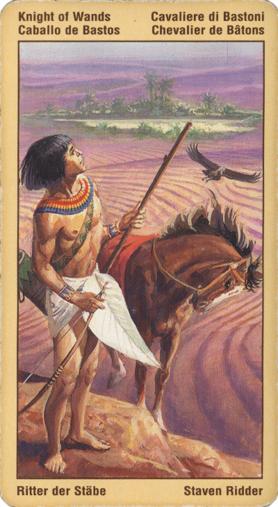

Принц Жезлов(Рыцарь)
Принц Посохов обожает разрабатывать проекты и выдвигать идеи, однако испытывает трудности с их осуществлением - он обладает рвением, однако для того, чтобы воплотить намеченное в жизнь ему недостает целеустремленности. По этой же причине он, становясь пылким и страстным возлюбленным, может не отличаться особой верностью и преданностью.
Прямое положение: отъезд, отлучка, полет, эмиграция. Не слишком образованный молодой человек, дружелюбный. Меняет местопребывание (место жительства).
Значение: Это – ковбой, спортсмен, энергичный предприниматель.
В прямом положении – романтик, готовый пойти на риск ради благородного дела. Совет – действовать; если речь идет о поездке, то – ехать, руководствуясь благородными помыслами.
Нетерпение, выражаемое этой картой, означает: я хочу все и по возможности все сразу. Если не получится сразу, или нам достается не все, мы раздражаемся, заводимся, становимся агрессивны. Однако внутренняя энергия, присущая Всаднику Жезлов, в любом случае приводит в движение целые пласты бытия, растапливает многолетний лед и вносит свежую струю в давно привычные ситуации.
В профессиональном плане позиция может относиться к человеку, который принимается за дело с большой пробивной силой и восторгом. Карта может означать и нечто такое, что стоит воплотить (дорогостоящий проект, нечто, что может вдохновить).
Через эту карту может произойти смена ваших взглядов, вашего мировоззрения. В принципе, эта карта как бы олицетворяет человека, который может существенно расширить ваши горизонты. Как минимум, он может переместить вас из сферы одной ситуации в сферу другой.
Молодой человек на коне, держащий жезл, как оружие. Молодой человек или женщина в возрасте от 25 до 40 (также применительно ко всем Рыцарям!) Вряд ли способен на долгие отношения слишком любит переезды, путешествия. Обожает бороться с трудностями. Также карта указывает на перемену работы,обстановки,переезд.
Споры, разлад в личной жизни, бегство, расставания, потеря друзей. Ревность, подозрения. Расстроенная свадьба, развод. Человек нарочно лезет в дела других и сеет смуту.
В перевернутом положении – риск не оправдан, события обернутся совсем не так, как вы ожидаете. Поездка (перемена места) будет вынужденной.
Вам либо не хватает энергии для того, чтобы воплотить свои идеи в жизнь, либо энергия Принца Посохов вышла из равновесия и обусловила возможность безрассудного и опрометчивого поведения. В перевернутом положении эта карта иногда может указывать на лжеца или хулигана, а также на бездушного возлюбленного.
Она также может символизировать человека, неспособного сдерживать свой темперамент и оставляющего за собой след эмоционального опустошения. В качестве альтернативы она может говорить о том, что вы постоянно избегаете любых страстей, душевных волнений и приключений.
Человек, который несет с собой раздоры, разрыв отношений, в пребывание того или иного процесса, в который вы вовлечены. Он несет с собой скандалы, свары, ссоры и может навсегда рассорить вас с друзьями.